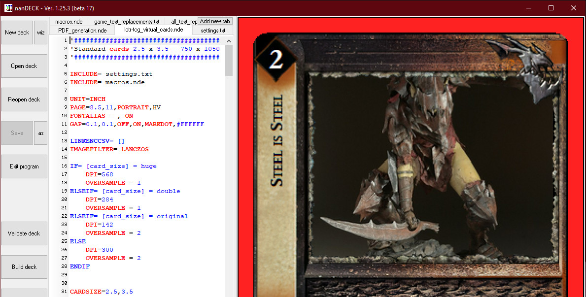

nanDECK Card Generator
How to create high-quality virtual dream cards in a snap.

That's it!
Here is a YouTube tutorial video with a demonstration:
If you need further help, there are detailed instructions included in the release (Generator_Tutorial_and_Documentation.pdf), which you can also view as a google doc here.
If you are looking for higher-resolution templates than the ones included in the package, see the page here to download those.
If you can't find the answer to your question in there, please reach out to ketura on the PC Discord server, or send an email to generator@lotrtcgpc.net.
What is nanDECK?
nanDECK is a program dedicated entirely to laying out CCG cards. It reads data from a spreadsheet (one row per card) and then transforms that data into a fully-formed card, based on the parameters of the script.
The PC maintains a script that generates Lord of the Rings TCG cards. All you have to do is fill out the spreadsheet, and nanDECK will do the rest, transforming your data into the cards of your dreams.
Where do I get it?
The latest zip package containing nanDECK, the script, and card templates can be downloaded here.
Past packaged versions can be found here.
The code can be found on the PC github here.
How do I use it?
The TL;DR is:
- Download and extract the card generator package.
- Edit cards.csv to include the cards you want (one card per row).
- Run nanDECK, open the script, and build the cards.
That's it!
Here is a YouTube tutorial video with a demonstration:
If you need further help, there are detailed instructions included in the release (Generator_Tutorial_and_Documentation.pdf), which you can also view as a google doc here.
If you are looking for higher-resolution templates than the ones included in the package, see the page here to download those.
If you can't find the answer to your question in there, please reach out to ketura on the PC Discord server, or send an email to generator@lotrtcgpc.net.